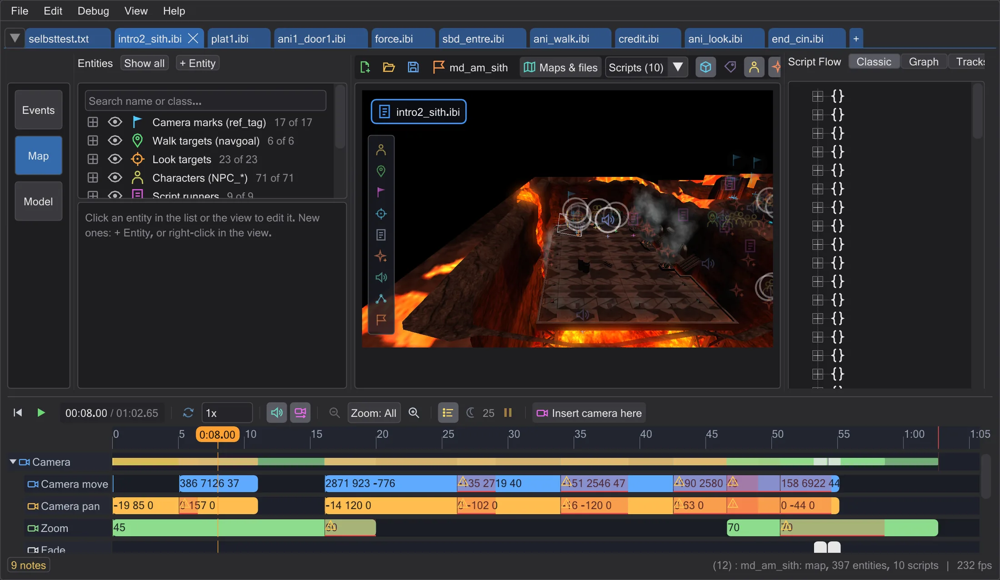

Start here
Welcome
BehavEd-Remake writes the scripts that run cutscenes and missions in Jedi Academy and Movie Duels - and shows them on the map while you write them.

The game runs its scenes with ICARUS scripts: lists of commands such as "walk to this spot", "play this sound", "move the camera there". Raven's original BehavEd let you build those lists from buttons. BehavEd-Remake does the same, file for file compatible, and adds what the original never had: the map in 3D, the figures walking their paths, the camera flying its shots, and a timeline that plays it all - before you ever start the game.
Where to start#
- New here? Read Getting started and The window - ten minutes, and every later page makes sense.
- Want to make something right away? Pick one of the tutorials below.
- Looking for one thing? Type it into the search box at the top left - it searches every page and jumps to the spot.
Tutorials#
Besides the big mission there are 63 short tutorials - each shows one thing in three to six steps. All of them, with pictures: Tutorials.
Scripts
- Write a script from scratch
- Three ways to add a command
- Change the values of a command
- Move, copy and comment out lines
- Undo anything - even one step from the middle
- Find and replace in all open scripts
- Bookmarks and the split view
- Compile and fix errors
- Wait until a figure has arrived
- Let two scripts wait for each other
- Use macros
- Only the first time: variables and if
- A guard walks his round
- Open a compiled script of the game
- Find files in the game archives
- See what you have changed
- Get an old version back
- Understand the warnings
Camera and timeline
- Fly a camera shot yourself
- Put a shot where you are looking
- Aim the camera at a mark on the map
- Zoom, fade to black and shake
- Retime a cutscene in the timeline
- Look through the camera while you work
- Let the camera follow a figure
- Show a video or a line of text
- Time a scene in the Tracks view
- The timeline in detail
- Remember viewpoints and camera paths
Figures
- Walk, run or walk backwards
- Make a figure look at someone
- Turn a figure at a moment
- Let a figure play an animation
- Add a line of dialogue
- Start a fight after the cutscene
- Hold the player during a talk
- Ignite a lightsaber in a scene
Map and entities
- Place, move and turn entities
- Find an entity and fly to it
- Edit an entity's keys
- Look at the map from above
- See better in dark maps
- Start a scene when the player walks somewhere
- Open a door from the script
- Go to the next map at the end
- Add an effect and change the music
- Move many entities at once
- A figure that appears on cue
- Load a separate .ent file
Animation
Missions, models and settings
- Connect a character to a script
- Continue and pack a mission
- Give NPCs paths to walk
- Look at a character model
- Change a cutscene of the game
- Check a script for multiplayer
- When the enemy dies, the door opens
- The player talks to a figure
- Let several scripts work together
- Fix what Save mission reports
- Skins and skeletons of a model
- Set up the program your way
What the program can do#
| Area | In short |
|---|---|
| Writing scripts | Build scripts from the command list, edit every value in a dialog, copy, move, undo - like the original BehavEd. |
| Script Flow: Classic, Graph, Tracks | See a script as a tree, as a graph of who starts whom, or as tracks over time. |
| The map | The map in 3D with lights, effects and models; fly through it, select and move entities. |
| Camera | Camera shots as keys on the map: move and turn them with the gizmo, fly them yourself, preview them. |
| Timeline | Play the scene, see every command in time, drag commands to change when they happen. |
| Figures and paths | Paths of walking figures and flying ships: start and end handles, new points, walk or run, facing. |
| Animating movers and ROFF files | Animate ships, doors and platforms - as move commands or as a ROFF file, built and edited right here. |
| Missions | Open a whole mission with all its scripts, build your own, and pack it into a .pk3 the game loads. |
Nothing is lost. Every change can be undone with Ctrl+Z, and files are only written when you save. The game files themselves are never changed: new things go next to your scripts or into your own .pk3.